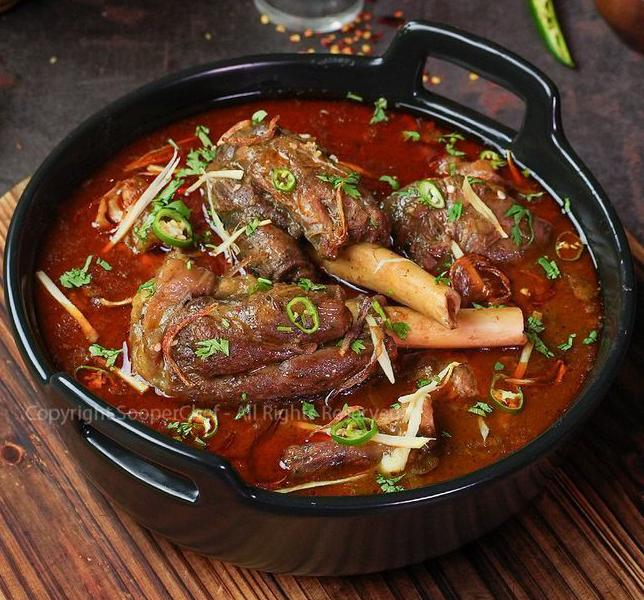
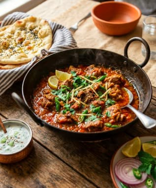
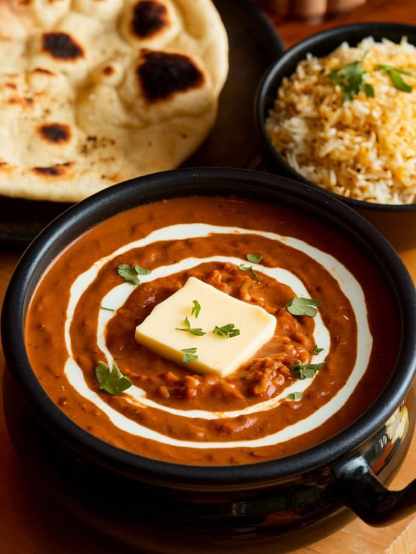
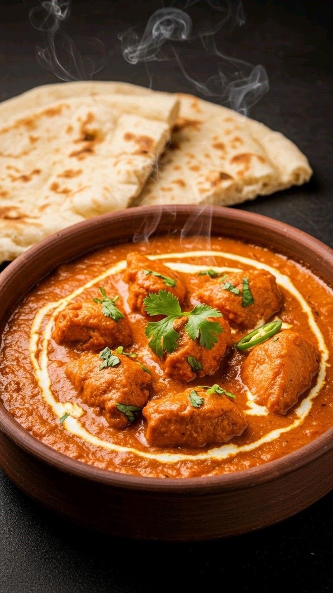
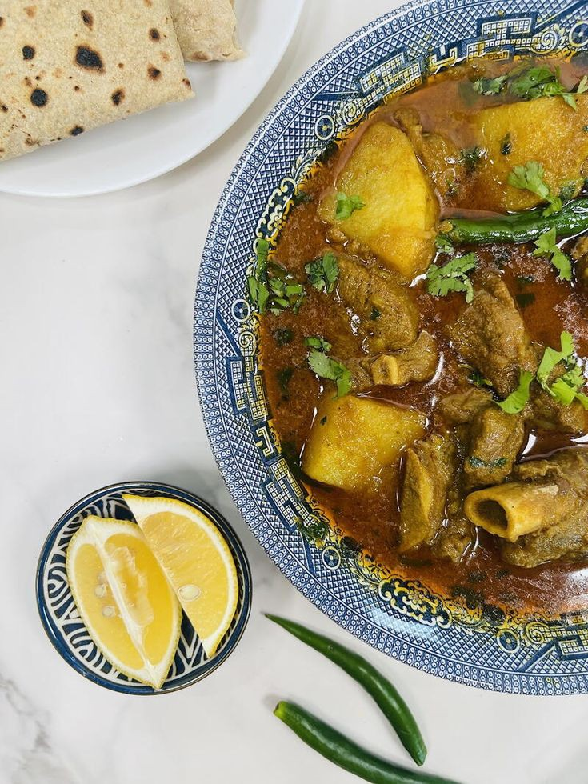
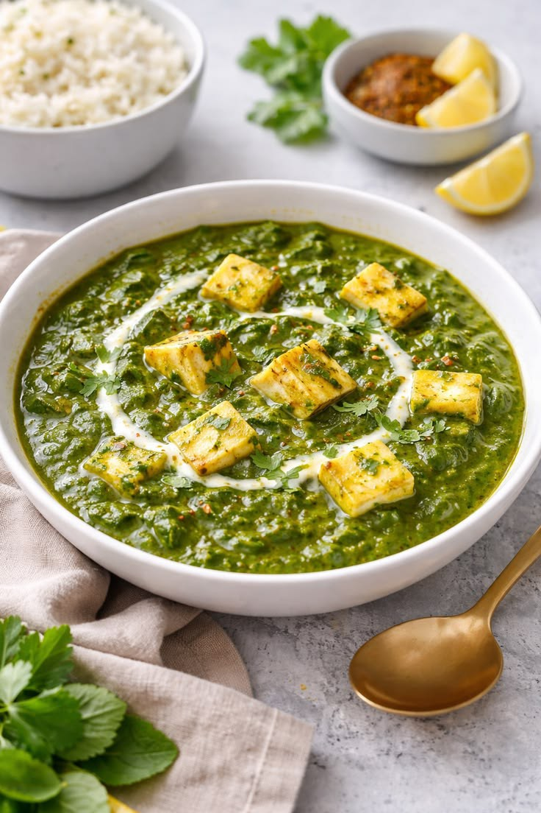
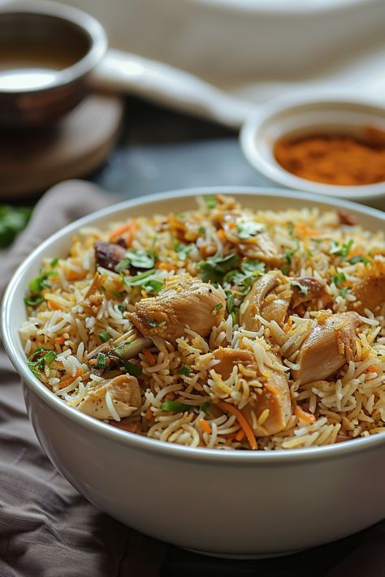

Slow CookBeef Nihari
A deeply rich and aromatic slow-cooked beef stew — originally a Mughal royal dish, now a beloved Pakistani dinner staple.
8 hearty Pakistani dinner dishes to feed the whole family

Slow CookA deeply rich and aromatic slow-cooked beef stew — originally a Mughal royal dish, now a beloved Pakistani dinner staple.

SpicyTender mutton pieces cooked in a wok with fresh tomatoes, green chillies, and ginger — a restaurant-style dish you can make at home.

VegetarianCreamy black lentils slow-cooked with butter, tomatoes, and warm spices. A comforting vegetarian dinner that pairs perfectly with naan.

ChickenJuicy chicken cooked in a rich, creamy yogurt-based gravy with aromatic spices in a traditional clay pot. Mildly spiced and full of depth.

BeefA homestyle Pakistani classic — beef and potatoes simmered together in a light, flavourful gravy with whole spices.
Spiced minced beef or mutton shaped onto skewers and grilled over charcoal for that authentic smoky flavour.

VegetarianSoft cubes of fresh paneer cooked in a smooth, spiced spinach gravy. A nutritious and flavourful vegetarian dinner.

ChickenFragrant long-grain rice cooked with whole spices and tender chicken in a light broth. Simpler than biryani but equally delicious.
Chef secrets for making your Pakistani dinner taste restaurant-quality
Frying your spices in oil until the oil separates is the most important step — it removes the raw taste and builds deep flavour.
Bone-in chicken or mutton releases natural gelatin into the gravy, making it richer and more flavourful than boneless cuts.
For biryani, nihari, or kabab — marinating your meat overnight allows the spices to fully penetrate for a much deeper flavour.